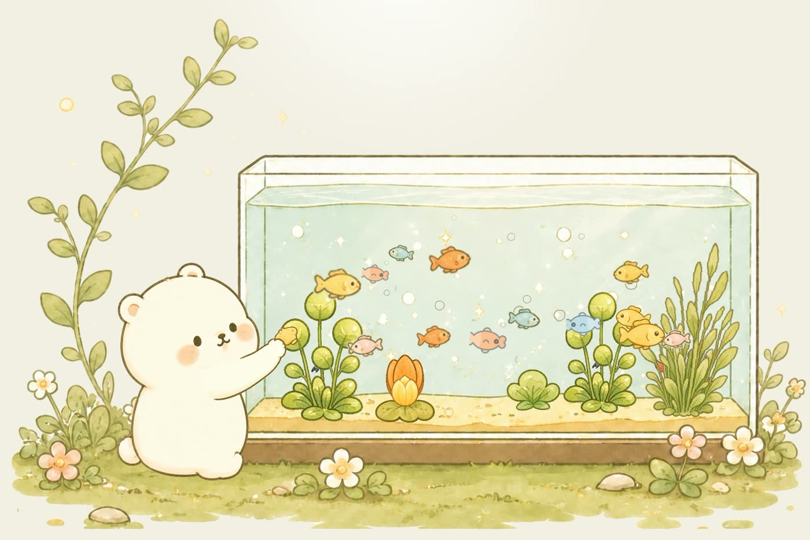
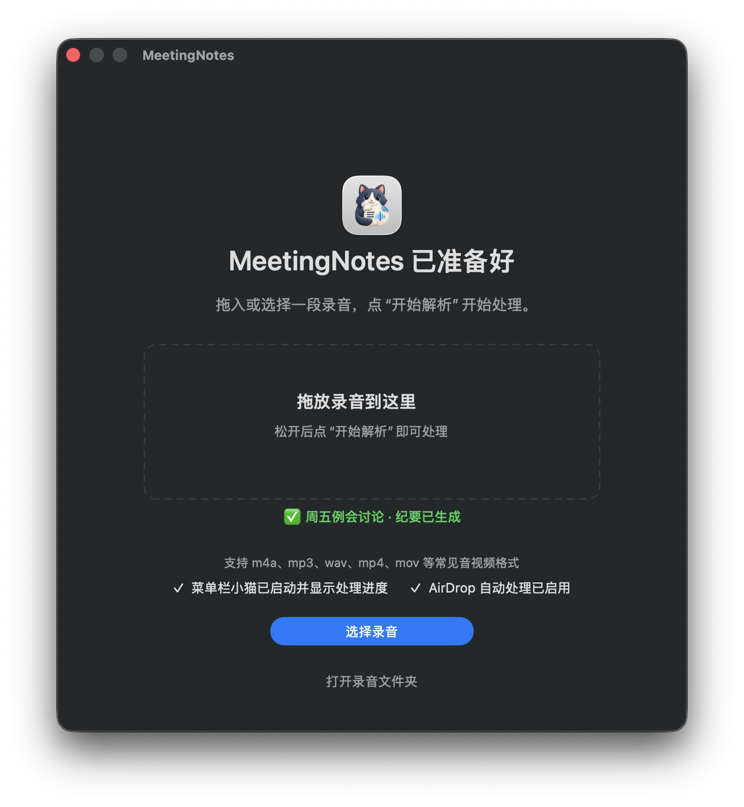
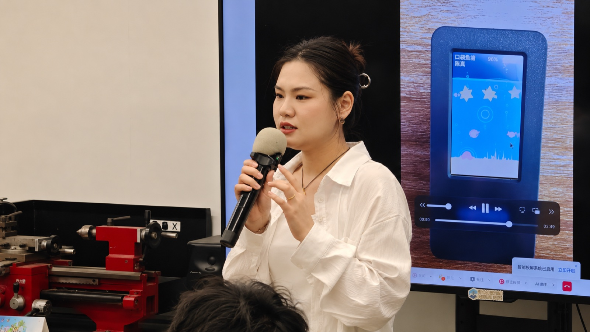

工业智能语义基座（新窗口）
让算法给出结论时，工程师仍看得见证据、留得住判断。
不同尺度，同样认真
企业中的复杂系统，
生活里的独立实验。
Selected Work / 06
让算法给出结论时，工程师仍看得见证据、留得住判断。

连接科研项目的目标、经费与交付。

在相处中留下记忆，慢慢长出自己的表达。
让下一位 AI，接住当前的工作。

让会议里的重要信息，留下来，也找得到。

把一小片鱼塘，放进日常的手心。
A Little About Me
从政企系统、工业 AI，到自己构建的桌面工具与硬件实验。我喜欢在不同尺度的问题里，找到真正值得做的那一步。
更多关于我Let's Make Something Real
关于 AI 产品、复杂系统，或一次有意思的合作，都欢迎聊聊。